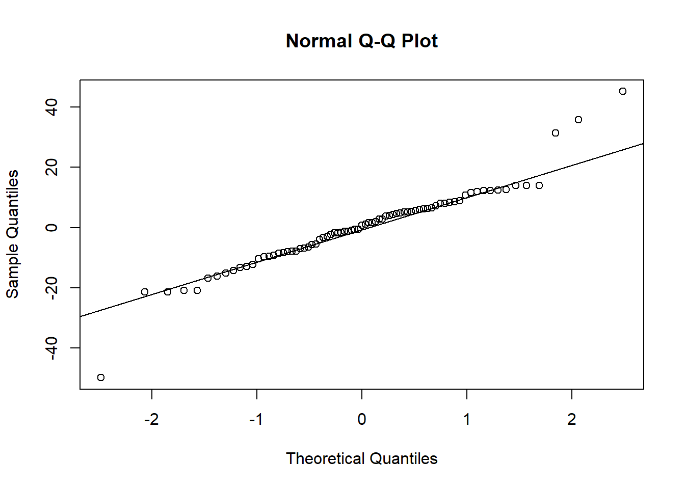
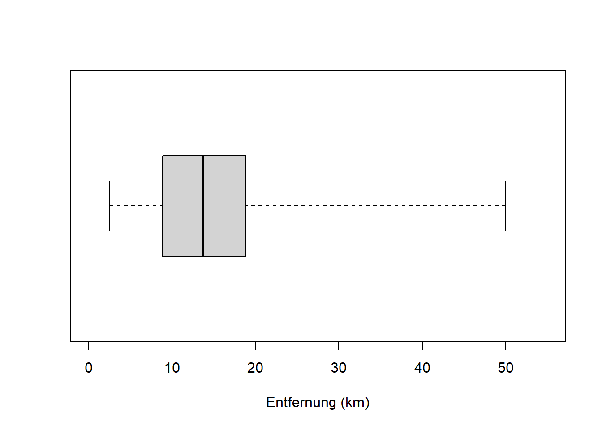
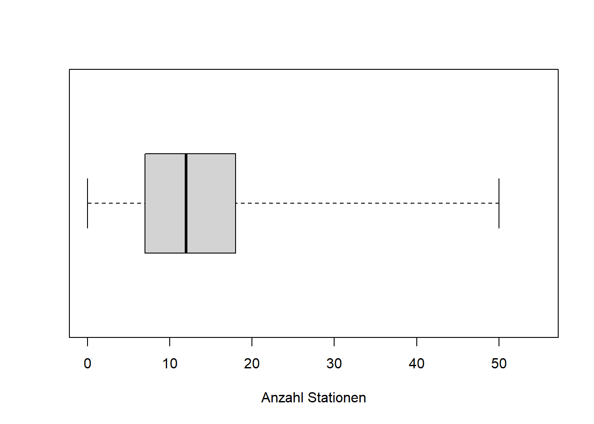
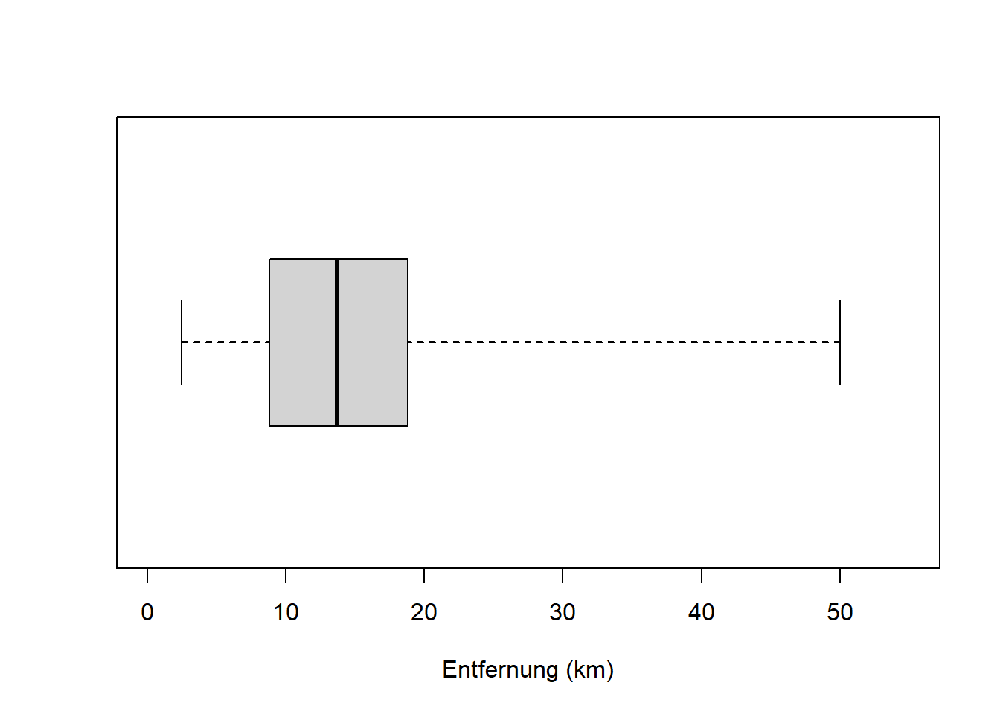
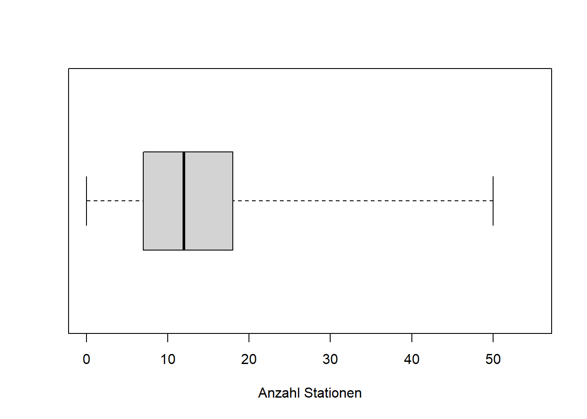

Kapitel 4 Streuungsparameter, Schiefe und Wölbung
4.1 Streuungsparameter
Lesen Sie dazu bitte Kapitel 3.2.3 von Zimmermann-Janschitz (2014).
Streuungsparameter sind Maße der Variabilität einer Häufigkeitsverteilung. Uns interessieren hier v.a. Spannweite, Quartilsabstand, Varianz und Standardabweichung und Variationskoeffizient, weniger durchschnittliche absolute Abweichung, da wir letztere kaum in der Praxis sehen.
Spannweite und Quartilsabstand lassen sich am besten mit einem sogenannten Box-Whisker-Plot, kurz einfach Boxplot, verdeutlichen (Abbildung 4.1). Ein Boxplot fasst die Verteilung der Werte eines Merkmals (in einer Stichprobe) zusammen. Die Spannweite ist der Abstand zwischen Minimum und Maximum der Merkmalswerte. Der Quartilsabstand ist der Abstand zwischen 0.25-Quantil und 0.75-Quantil; in diesem Bereich liegen 50% der Merkmalswerte (0.75 - 0.25). 0.25-Quantil, 0.5-Quantil (Median) und 0.75-Quantil heißen auch 1., 2. und 3. Quartil, weil sie den Wertebereich in vier gleichgroße Teile teilen: zwischen Minimum und 0.25-Quantil liegen 25% der Merkmalswerte, zwischen 0.25-Quantil und Median 25%, zwischen Median und 0.75-Quantil 25% und zwischen 0.75-Quantil und Maximum ebenfalls 25% aller Merkmalswerte. Ebenso gibt es auch Quintile usw., diese sind aber in der Praxis kaum von Bedeutung. Ein Boxplot kann horizontal (wie hier) und vertikal dargestellt werden.

Abbildung 4.1: Boxplot mit Quartilsabstand und Spannweite.
Der Boxplot ist eine vereinfachte Darstellung eines Histogramms. Schauen Sie sich dazu bitte Kapitel 4.3.6 von Zimmermann-Janschitz (2014) an, v.a. Abbildung 4.10. Erkennen Sie welcher Boxplot in 4.10b zu welchem Histogramm in 4.10c gehört?
Die Entsprechung können Sie auch in unseren Reisedaten sehen (hier sowohl “Distanz” als auch “Stationen”):
# Histogramm "Distanz" in km
hist(reisedat$distanz, breaks = seq(0, 55, 5),
main = "", xlab = "Entfernung (km)", ylab = "absolute Häufigkeit")
# Histogramm "Stationen"
hist(reisedat$stationen, breaks = seq(0, 55, 5),
main = "", xlab = "Anzahl Stationen", ylab = "absolute Häufigkeit")
# Boxplot "Distanz" in km
boxplot(reisedat$distanz, range = 0, horizontal = TRUE,
ylim = c(0, 55), xlab = "Entfernung (km)")
# Boxplot "Stationen"
boxplot(reisedat$stationen, range = 0, horizontal = TRUE,
ylim = c(0, 55), xlab = "Anzahl Stationen") 

Sowohl “Distanz” als auch “Stationen” sind schief verteilt, die zentralen 50% der Verteilung - die “Box” im Boxplot - befinden sich links der Mitte. Für das Verständnis von Verteilungen in Kapitel 7 ist es wichtig, dass sie den Zusammenhang zwischen Histogramm und Boxplot verstehen!
Nun zu den weiteren Streuungsparametern. Die Varianz \(s^2\) ist die mittlere (“durchschnittliche”) quadrierte Abweichung der Merkmalswerte \(x_i\quad\left(i=1, 2, \ldots, x_n\right)\) vom arithmetischen Mittel \(\bar x\): \[s^2=\frac{\sum_{i-1}^{n}\left(x_i-\bar x\right)^2}{n-1}\]
Genau genommen ist das die korrigierte Varianz, wo durch \(n-1\) geteilt wird und nicht durch \(n\) wie man bei einer Mittelung erwarten könnte. Das Teilen durch \(n-1\) garantiert eine optimale Schätzung der Varianz der Grundgesamtheit anhand der Stichprobe - mehr dazu in der schließenden Statistik. Der Nenner \(n-1\) wird Anzahl Freiheitsgrade genannt und bezeichnet die Anzahl der Werte in einer Stichprobe, die für die Berechnung des Parameters (hier Varianz) frei zur Verfügung stehen. Im Fall der Varianz ist ein Wert der Stichprobe bereits “belegt” – durch das arithmetische Mittel. Daher reduziert sich die Zahl der Elemente der Stichprobe, die in die Berechnung eingehen um eins.
Die Standardabweichung \(s\) ist die Quadratwurzel der mittleren quadrierten Abweichung der Merkmalswerte \(x_i\quad\left(i=1, 2, \ldots, x_n\right)\) vom arithmetischen Mittel \(\bar x\), d.h. die Quadratwurzel der Varianz: \[s=\sqrt{s^2}=\sqrt{\frac{\sum_{i-1}^{n}\left(x_i-\bar x\right)^2}{n-1}}\]
Die Standardabweichung besitzt die gleiche Einheit wie die Merkmalswerte und ist deshalb einfacher zu interpretieren als die Varianz. Sie drückt die Streuung der Merkmalswerte um den Mittelwert bzw. deren Abweichung vom Mittelwert in einer anschaulichen Größe aus. Je größer die Werte der Standardabweichung sind, desto mehr streuen die Daten.
Der Variationskoeffizient \(v\) einer Häufigkeitsverteilung mit den Merkmalswerten \(x_i\quad\left(i=1, 2, \ldots, x_n\right)\) schließlich ist die Standardabweichung \(s\) im Verhältnis zum Mittelwert \(\bar x\): \[v=\frac{s}{\bar x}\]
Der Variationskoeffizient setzt die Streuung der Merkmalswerte in unmittelbare Relation zum arithmetischen Mittel. Dadurch werden unterschiedliche Verteilungen vergleichbar.
Schauen wir uns die Streungsparameter für die Reisedaten mittels R an:
# "Distanz" in km
# 1) arithmetisches Mittel
dbar <- mean(reisedat$distanz)
# 2) Varianz
s2d <- var(reisedat$distanz)
# 3) Standardabweichung
sd <- sqrt(s2d)
# oder
sd <- sd(reisedat$distanz)
# 4) Variationskoeffizient
vd <- sd / dbar
# Ergebnisse:
print(c(dbar, s2d, sd, vd))## [1] 14.9834 77.9118 8.8268 0.5891# "Stationen"
# 1) arithmetisches Mittel
sbar <- mean(reisedat$stationen)
# 2) Varianz
s2s <- var(reisedat$stationen)
# 3) Standardabweichung
ss <- sd(reisedat$stationen)
# 4) Variationskoeffizient
vs <- ss / sbar
# Ergebnisse:
print(c(sbar, s2s, ss, vs))## [1] 13.8243 96.9139 9.8445 0.7121Die Variable “Stationen” hat im Vergleich zu “Distanz” eine etwas größere Varianz bei etwas geringerem Mittelwert. Daher ist der Variationskoeffizient größer.
4.2 Schiefe und Wölbung von Häufigkeitsverteilungen
Lesen Sie dazu bitte Kapitel 3.2.5 von Zimmermann-Janschitz (2014).
Die Schiefe \(a_3\) einer Häufigkeitsverteilung von Merkmalswerten \(x_1, x_2, \ldots, x_n\) mit dem arithmetischen Mittel \(\bar x\) und der Standardabweichung \(s\) bezeichnet die Abweichung der Verteilung der Merkmalswerte von der symmetrischen Form: \[a_3=\frac{\sum_{i=1}^{n}\left(x_i-\bar x\right)^3}{n\cdot s^3}\]
Für eine symmetrische Verteilung gilt: \[a_3=0\quad \bar x_{mod}=\bar x_{med}=\bar x\] D.h. Modus, Median und Arithmetisches Mittel sind identisch.
Für eine sogenannte rechtsschiefe (linkssteile) Verteilung gilt: \[a_3>0\quad \bar x_{mod}<\bar x_{med}<\bar x\]
Für eine linkschiefe (rechtssteile) Verteilung gilt:\[a_3<0\quad \bar x_{mod}>\bar x_{med}>\bar x\]
Wie wir an Histogramm und Boxplot der Entfernungsdaten bereits gesehen haben, sind die Verteilungen der Merkmale “Distanz” und “Stationen” rechtsschief:
# "Distanz" in km
# 1) Schiefe
skew_d <- skewness(reisedat$distanz)
# 2) Median
med_d <- median(reisedat$distanz)
# 3) arithmetisches Mittel
mean_d <- mean(reisedat$distanz)
# Ergebnisse:
print(c(skew_d, med_d, mean_d))## [1] 1.516 13.700 14.983 Daraus folgt: Modus(=7.5) < Median < arithm. Mittelwert
Das Merkmal "Distanz" ist rechtsschief verteilt.# "Stationen"
# 1) Schiefe
skew_s <- skewness(reisedat$stationen)
# 2) Median
med_s <- median(reisedat$stationen)
# 3) arithmetisches Mittel
mean_s <- mean(reisedat$stationen)
# Ergebnisse:
print(c(skew_s, med_s, mean_s))## [1] 1.423 12.000 13.824 Daraus folgt: Modus(=7.5) < Median < arithm. Mittelwert
Das Merkmal "Stationen" ist rechtsschief verteilt.Die Wölbung \(a_4\) einer Häufigkeitsverteilung von Merkmalswerten \(x_1, x_2, \ldots, x_n\) mit dem arithmetischen Mittel \(\bar x\) und der Standardabweichung \(s\) bestimmt die Steilheit einer Verteilung: \[a_4=\frac{\sum_{i=1}^{n}\left(x_i-\bar x\right)^4}{n\cdot s^4}-3\]
Die Subtraktion von \(-3\) dient der Standardisierung auf die sogenannte Normalverteilung, eine symmetrische, glockenförmige Verteilung (s. Zimmermann-Janschitz 2014, Kapitel 3.2.5). Mehr zur Normalverteilung in Kapitel 7.
Für eine Normalverteilung gilt: \[a_4=0\]
Für eine “spitzere” Verteilung als die Normalverteilung gilt: \[a_4>0\]
Für eine “flachere” Verteilung als die Normalverteilung gilt:\[a_4<0\]
Die Verteilungen der Merkmale unserer Reisedaten sind beide spitzer als die Normalverteilung, wobei beide Variablen wegen ihrer Rechtsschiefe ohnehin nicht mit der Normalverteilung vergleichbar sind:
## [1] 3.038## [1] 2.266Literatur
Zimmermann-Janschitz, S. 2014. Statistik in Der Geographie. Berlin: Springer Spektrum.